Core · Video walkthrough
Configure call intake, dispatch behavior and closeout
Review call intake, recipient scope, status automation, recommendation tuning, timer rules and form policy, then interpret an actual training closeout.
Before you begin
- Use the fictional Chicago Fire training department with department-settings access.
- Run-card and conditional-response controls must be available for the recommendation sections.
- Know the configured unit status sets, roster and crew assignments before changing automation.
- Preserve existing calls, counters, provider configuration and access controls; this walkthrough reviews captured settings and one existing training closeout.
Chapters
- Review call intake and pruning
- Keep numbering and intake separate
- Understand group and shift behavior
- Review group scope and exceptions
- Review unit recipients and status targets
- Review linked status and confirmation
- Review recommendations and waiting resources
- Review separate timer and coverage forms
- Review call-creation field rules
- Inspect a real training closeout
- Review automatic closure and apply the policy
Watch the walkthrough
Step 1
Review call intake and pruning
Open Call Settings in our fictional Chicago Fire department. Dispatch Import Email would show its all-call intake address; this example is blank. Email Type is set to Generic. Match the parser to the incoming format before using that channel. Prune (Auto Close) Calls is off and Minutes to keep call open is zero. The cleanup setting concerns eligible imported calls. We are reviewing the controls without sending an import or demonstrating an automatic close.

Practice
Identify the current parser, blank intake address and disabled cleanup values without sending or saving.
Step 2
Keep numbering and intake separate
Scroll to Call Numbering. The saved pattern is FD51-{YYYY}-{SEQ}, with four sequence digits. Next call number advanced after a separate training call. Existing calls keep their original numbers. The numbering lesson explains patterns and carry-forward values. An email-parser choice does not configure every phone or message channel; verify each supported intake route and recipient receipt separately.


Practice
Read the saved pattern and next number while preserving the existing sequence.
Step 3
Understand group and shift behavior
Open Call & Dispatch Settings. Use Shift for Group Dispatch selects the resolved on-duty roster; an empty roster falls back to group members for notification routing. Set Status for Shift Personnel On Dispatch is a separate switch. Automatic personnel dispatch and release statuses require both switches and use the resolved shift personnel. The two Person Call status controls choose those statuses. Both switches remain off here. Review the actual roster before changing them; an empty notification fallback does not create a shift or establish a status change.
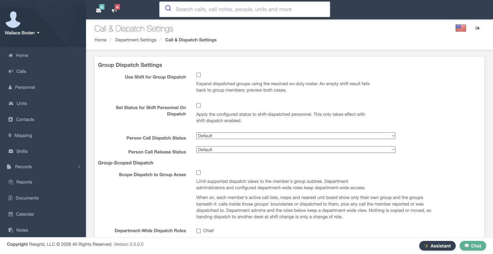
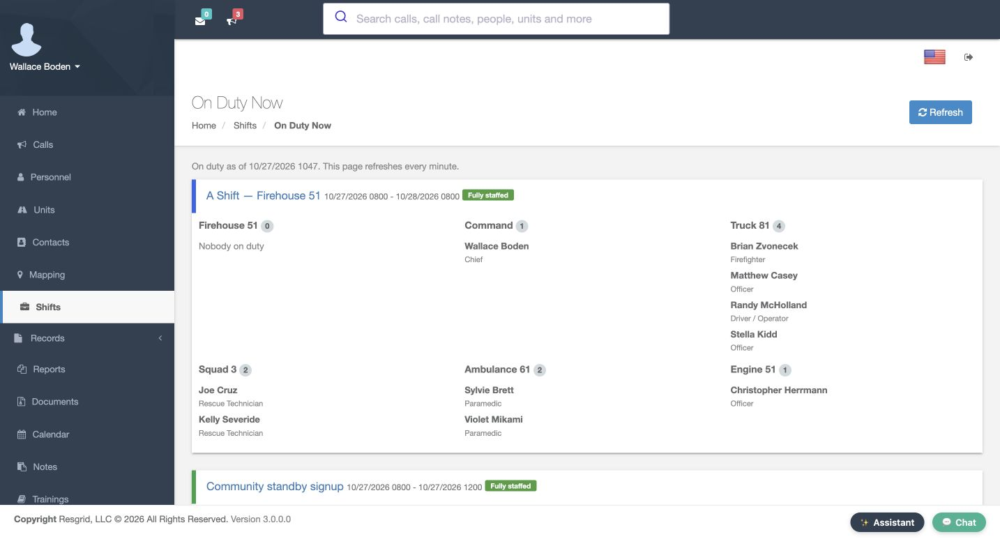
Practice
Explain notification roster fallback separately from automatic personnel status eligibility.
Step 4
Review group scope and exceptions
Group-Scoped Dispatch separates area scope from recipient selection. When Scope Dispatch to Group Areas is enabled, supported views and nearest comparisons follow the member’s group subtree and applicable calls. Department administrators and selected Department-Wide Dispatch Roles retain a wider view. Our scope switch and role exceptions remain off; the operator is a department administrator. Group Boundary defines response areas separately. A unit can remain listed without a nearest comparison, so review scope, status and position together.
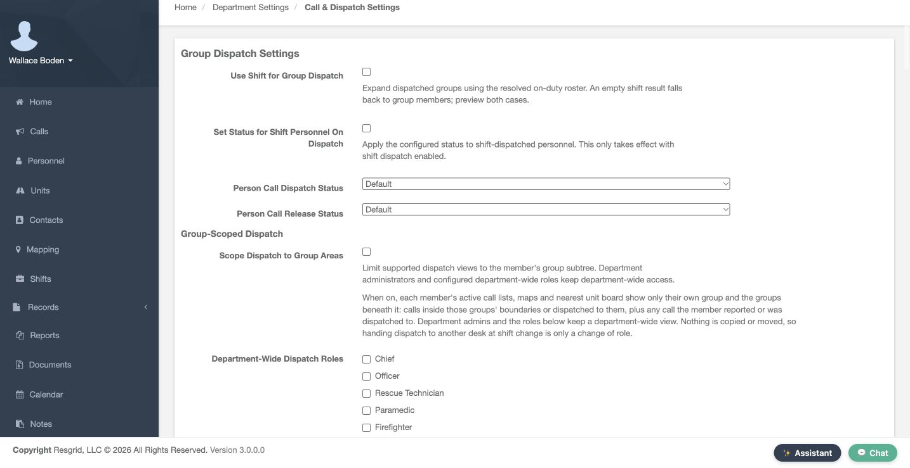


Practice
Identify the current administrator scope and explain why a missing estimate is not a deletion.
Step 5
Review unit recipients and status targets
Also Dispatch To Assigned Personnel and Also Dispatch To Entire Group can expand a unit’s notification audience. Both are off here. Unit Call Dispatch Status and Unit Call Release Status are separate meaning-based choices. Defaults resolve within each unit’s own status set; built-in units use Responding on dispatch and Released on release. A missing matching custom status leaves the unit unchanged. Custom-status types can provide type-specific override rows. This Engine type uses Standard Actions, so this example has no such rows. Review crew assignments and status meanings before broadening recipients or changing targets.
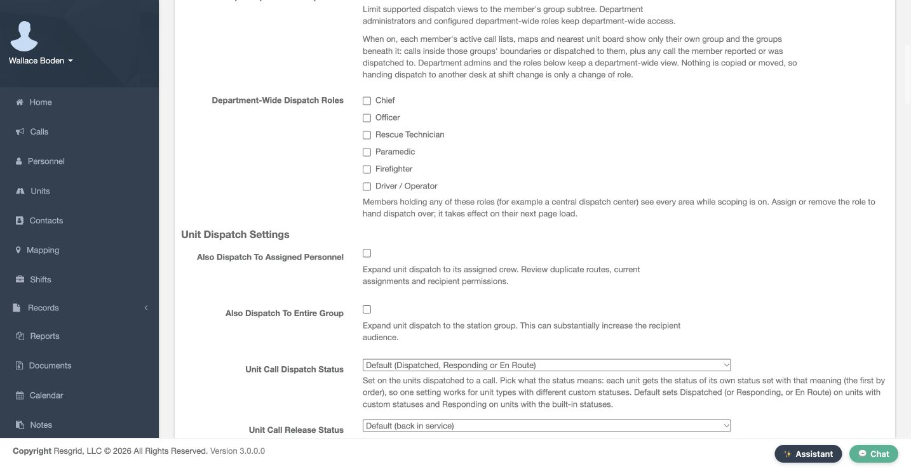
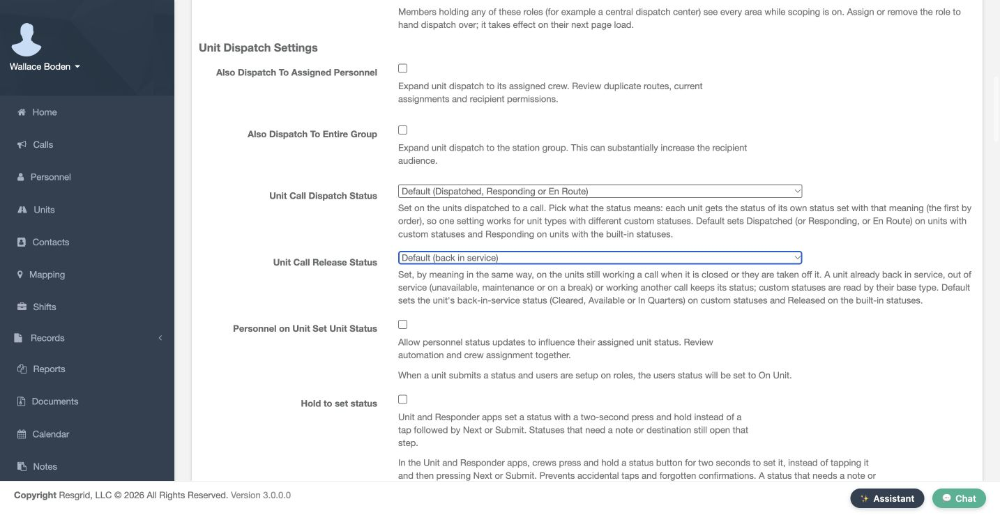
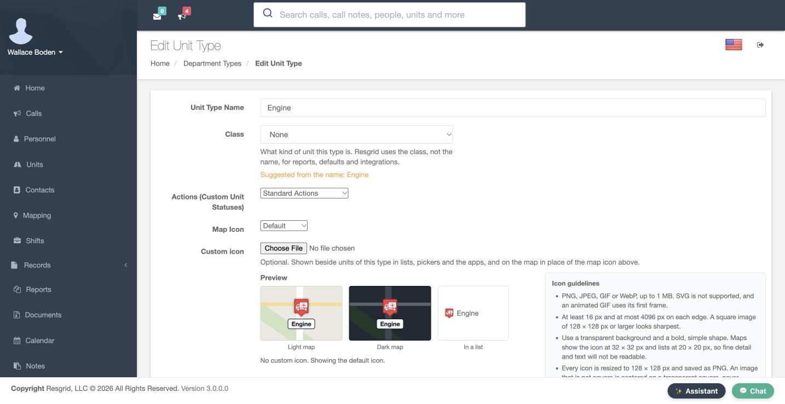

Practice
Trace the two audience switches and dispatch/release targets; identify why no custom-type override table appears.
Step 6
Review linked status and confirmation
Personnel on Unit Set Unit Status controls linked crew context: a supported unit-status submission can place its submitted crew roles into On Unit. It remains off here. Hold to set status also remains off. When enabled in supported Unit and Responder apps, crews hold a status for two seconds; statuses requiring a note or destination still open that step. Verify that behavior in the app version crews use. These switches do not create crew assignments or establish anyone’s qualification.
Practice
Explain each switch without assuming a native gesture or linked status was exercised.
Step 7
Review recommendations and waiting resources
Run Cards & Automatic Dispatch shows Closest Unit Response with automatic dispatch off. Rest period deprioritizes recently dispatched resources; minimum staffing checks configured seats, and move-up checks station minimums. Our rest period is zero, staffing gate off and move-up off. Closest Unit Response Tuning has 1800-second location ages, a zero radius limit, meaning no maximum, stale locations excluded and routed ETA off. The shortlist is five. Station turnout is 120 seconds; mobile and personnel turnout are zero. Freed-unit automatic dispatch remains off; its limit bounds automatic sends while alerts still occur. Response codes is empty; its name, colour, retirement and crew-display controls apply when codes exist. Review New Call recommendations before sending.
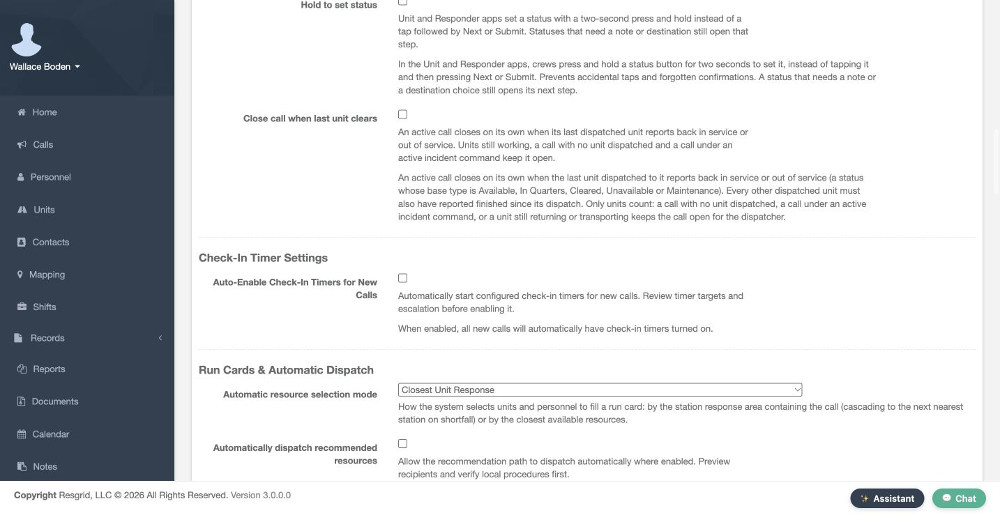
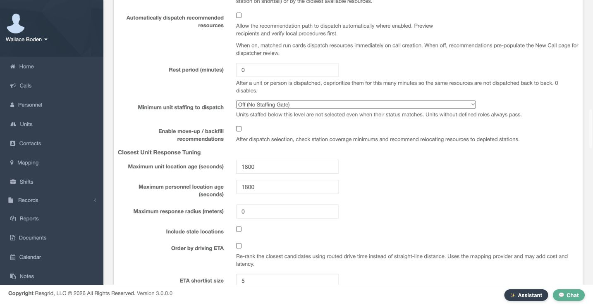
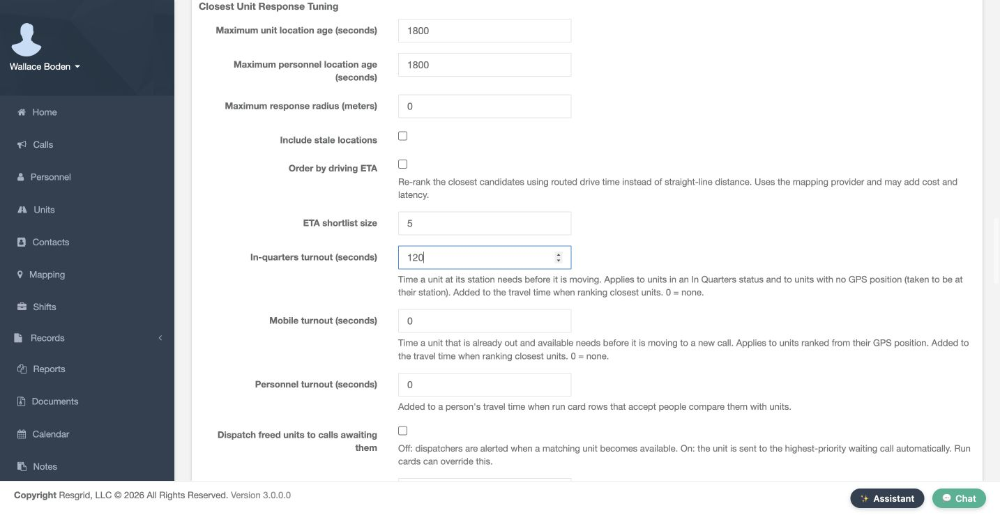
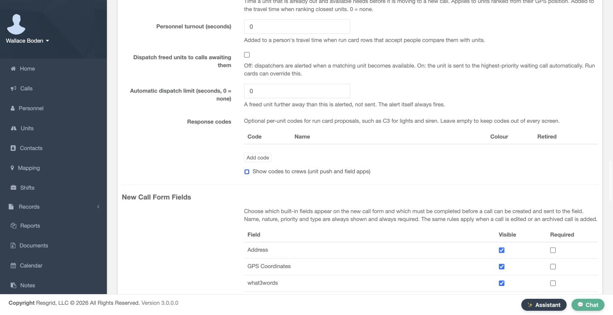
Practice
Read the saved120/0/0 turnout and compare it with the actual2-minute training unit estimate; keep automatic dispatch off.
Step 8
Review separate timer and coverage forms
Auto-Enable Check-In Timers for New Calls is off. Default Timer Configurations is empty. The saved Investigation Personnel override is 60 minutes, warning five, enabled for all states and any priority. Matching overrides take precedence over defaults; the call’s own timer flag also matters. Our separately enabled training call shows Boden’s timer. No check-in receipt is established here. Timer forms use their own Add controls, and station coverage has a separate Save. Station Coverage Minimums currently has no saved requirements; its station, target, count and radius fields are a preparation form.
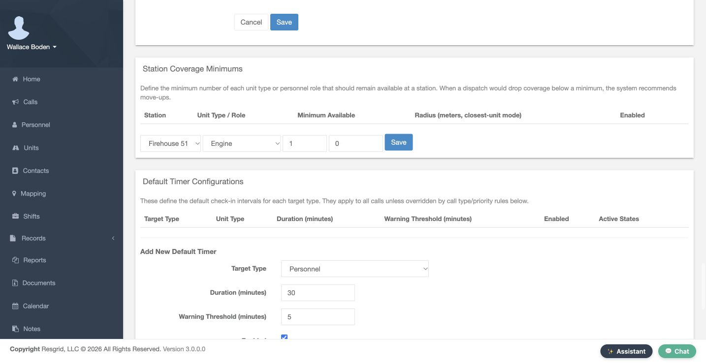
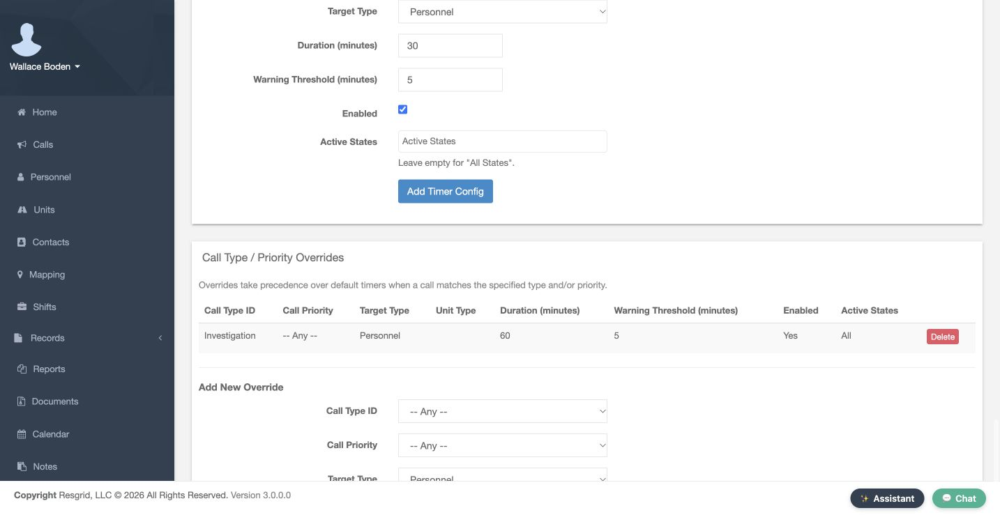
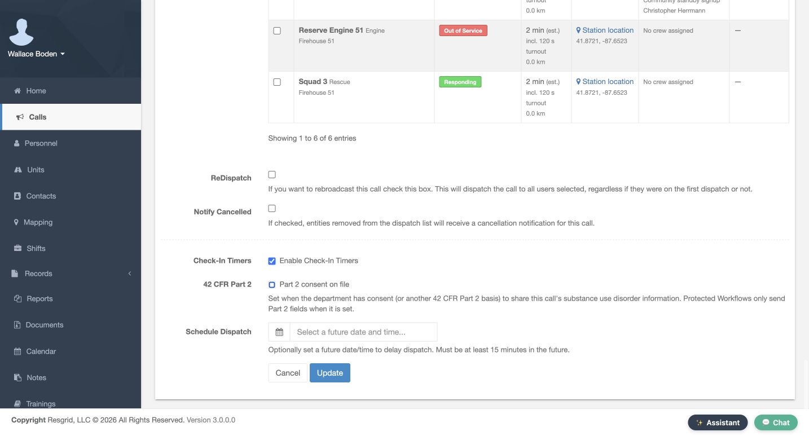

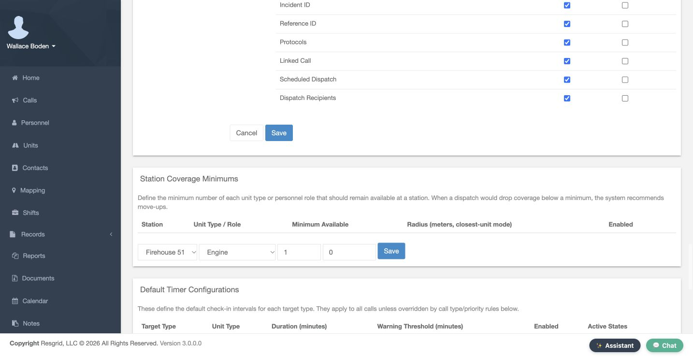
Practice
Distinguish the saved60-minute override from unsaved30-minute new-default form values and the call-level enable flag.
Step 9
Review call-creation field rules
New Call Form Fields has separate Visible and Required columns. Here the optional fields are visible and their required boxes are clear. Name, nature, priority and type always remain required. A missing required value can block a new call, archived-call entry or saved edit; hidden fields cannot remain mandatory. Plus Code is a location-finding aid and cannot be required; require GPS Coordinates when a saved point is necessary. Review both halves of the table, then the corresponding call form. This example preserves the current field policy.
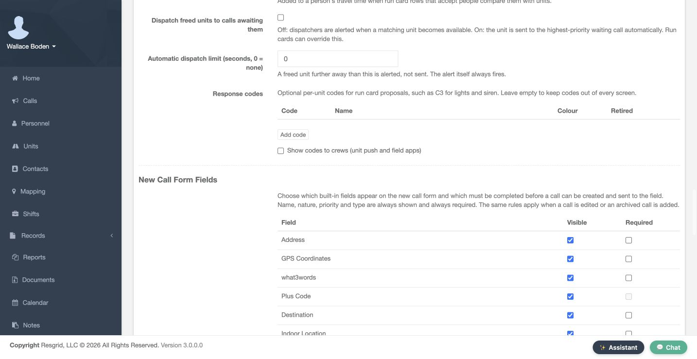
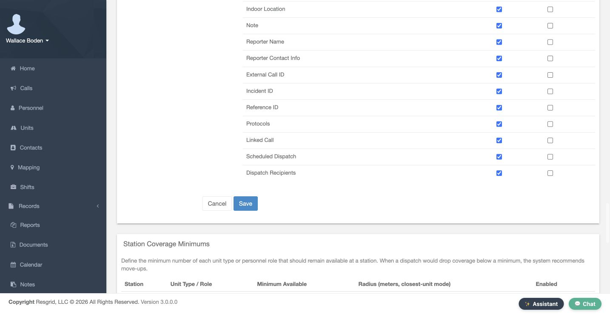

Practice
Explain the current Visible/Required policy and identify the disabled Plus Code requirement.
Step 10
Inspect a real training closeout
Use the existing training example 26-4. Its Dispatched tab stores Engine 51 and Christopher Herrmann. Stored assignment alone does not confirm device receipt. On its Close Call form, Completed Type is Closed, training notes are entered and Send Notification is off. The saved call then shows Closed with closing details and notes. Release policy moves only units still working that call. Units already back in service, unavailable, under maintenance, on break or working another open call can keep their status. Review status history separately when validating release behavior.


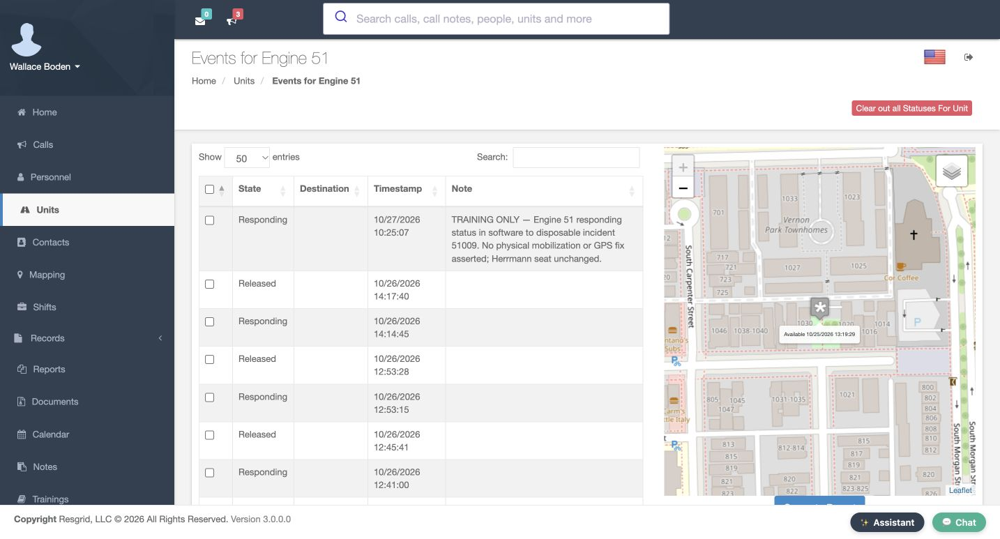
Practice
Compare stored recipients, the notification-off close form and the saved Closed record; keep release-status verification separate.
Step 11
Review automatic closure and apply the policy
Close call when last unit clears is off in this example. If enabled, every dispatched unit must report finished after dispatch; returning or transporting still keeps work open. Calls without dispatched units, future undispatched calls and active incident command retain their closeout guards. This training example uses manual closure. Chicago Fire can review station crews and notification audiences. Community care or mental health teams can review rosters; search and rescue teams availability and qualifications; security teams patrol coverage. Wildland contractors and industrial teams can check crew capability and access. Verify call state, status history and recipient receipt separately.
Practice
Explain the automatic-close guards and choose a controlled verification plan suited to your sector.
Examples for your department
- Fire / EMS
- Chicago Fire: compare station crews, explicit recipients and unit status meanings before changing dispatch automation.
- Community response
- Community care and mental health teams: review available rosters, intended recipients and accurate call locations; keep clinical judgments separate.
- Search and rescue
- Search and rescue: review qualified available members, response areas and location freshness.
- Security
- Security teams: review patrol coverage, group scope and notification audiences.
- Wildland
- Wildland contractors: compare crew capability, access and coverage before enabling automatic selection.
- Industrial
- Industrial teams: review facility resources, crew capability, incident access and guarded closeout.
Transcript
Download transcriptRead the complete transcript
Configure call intake, dispatch behavior and closeout
Audience: Department administrators and dispatch supervisors
Review call intake and pruning
Open Call Settings in our fictional Chicago Fire department. Dispatch Import Email would show its all-call intake address; this example is blank. Email Type is set to Generic. Match the parser to the incoming format before using that channel. Prune (Auto Close) Calls is off and Minutes to keep call open is zero. The cleanup setting concerns eligible imported calls. We are reviewing the controls without sending an import or demonstrating an automatic close.
Practice: Identify the current parser, blank intake address and disabled cleanup values without sending or saving.
Keep numbering and intake separate
Scroll to Call Numbering. The saved pattern is FD51-{YYYY}-{SEQ}, with four sequence digits. Next call number advanced after a separate training call. Existing calls keep their original numbers. The numbering lesson explains patterns and carry-forward values. An email-parser choice does not configure every phone or message channel; verify each supported intake route and recipient receipt separately.
Practice: Read the saved pattern and next number while preserving the existing sequence.
Understand group and shift behavior
Open Call & Dispatch Settings. Use Shift for Group Dispatch selects the resolved on-duty roster; an empty roster falls back to group members for notification routing. Set Status for Shift Personnel On Dispatch is a separate switch. Automatic personnel dispatch and release statuses require both switches and use the resolved shift personnel. The two Person Call status controls choose those statuses. Both switches remain off here. Review the actual roster before changing them; an empty notification fallback does not create a shift or establish a status change.
Practice: Explain notification roster fallback separately from automatic personnel status eligibility.
Review group scope and exceptions
Group-Scoped Dispatch separates area scope from recipient selection. When Scope Dispatch to Group Areas is enabled, supported views and nearest comparisons follow the member’s group subtree and applicable calls. Department administrators and selected Department-Wide Dispatch Roles retain a wider view. Our scope switch and role exceptions remain off; the operator is a department administrator. Group Boundary defines response areas separately. A unit can remain listed without a nearest comparison, so review scope, status and position together.
Practice: Identify the current administrator scope and explain why a missing estimate is not a deletion.
Review unit recipients and status targets
Also Dispatch To Assigned Personnel and Also Dispatch To Entire Group can expand a unit’s notification audience. Both are off here. Unit Call Dispatch Status and Unit Call Release Status are separate meaning-based choices. Defaults resolve within each unit’s own status set; built-in units use Responding on dispatch and Released on release. A missing matching custom status leaves the unit unchanged. Custom-status types can provide type-specific override rows. This Engine type uses Standard Actions, so this example has no such rows. Review crew assignments and status meanings before broadening recipients or changing targets.
Practice: Trace the two audience switches and dispatch/release targets; identify why no custom-type override table appears.
Review linked status and confirmation
Personnel on Unit Set Unit Status controls linked crew context: a supported unit-status submission can place its submitted crew roles into On Unit. It remains off here. Hold to set status also remains off. When enabled in supported Unit and Responder apps, crews hold a status for two seconds; statuses requiring a note or destination still open that step. Verify that behavior in the app version crews use. These switches do not create crew assignments or establish anyone’s qualification.
Practice: Explain each switch without assuming a native gesture or linked status was exercised.
Review recommendations and waiting resources
Run Cards & Automatic Dispatch shows Closest Unit Response with automatic dispatch off. Rest period deprioritizes recently dispatched resources; minimum staffing checks configured seats, and move-up checks station minimums. Our rest period is zero, staffing gate off and move-up off. Closest Unit Response Tuning has 1800-second location ages, a zero radius limit, meaning no maximum, stale locations excluded and routed ETA off. The shortlist is five. Station turnout is 120 seconds; mobile and personnel turnout are zero. Freed-unit automatic dispatch remains off; its limit bounds automatic sends while alerts still occur. Response codes is empty; its name, colour, retirement and crew-display controls apply when codes exist. Review New Call recommendations before sending.
Practice: Read the saved120/0/0 turnout and compare it with the actual2-minute training unit estimate; keep automatic dispatch off.
Review separate timer and coverage forms
Auto-Enable Check-In Timers for New Calls is off. Default Timer Configurations is empty. The saved Investigation Personnel override is 60 minutes, warning five, enabled for all states and any priority. Matching overrides take precedence over defaults; the call’s own timer flag also matters. Our separately enabled training call shows Boden’s timer. No check-in receipt is established here. Timer forms use their own Add controls, and station coverage has a separate Save. Station Coverage Minimums currently has no saved requirements; its station, target, count and radius fields are a preparation form.
Practice: Distinguish the saved60-minute override from unsaved30-minute new-default form values and the call-level enable flag.
Review call-creation field rules
New Call Form Fields has separate Visible and Required columns. Here the optional fields are visible and their required boxes are clear. Name, nature, priority and type always remain required. A missing required value can block a new call, archived-call entry or saved edit; hidden fields cannot remain mandatory. Plus Code is a location-finding aid and cannot be required; require GPS Coordinates when a saved point is necessary. Review both halves of the table, then the corresponding call form. This example preserves the current field policy.
Practice: Explain the current Visible/Required policy and identify the disabled Plus Code requirement.
Inspect a real training closeout
Use the existing training example 26-4. Its Dispatched tab stores Engine 51 and Christopher Herrmann. Stored assignment alone does not confirm device receipt. On its Close Call form, Completed Type is Closed, training notes are entered and Send Notification is off. The saved call then shows Closed with closing details and notes. Release policy moves only units still working that call. Units already back in service, unavailable, under maintenance, on break or working another open call can keep their status. Review status history separately when validating release behavior.
Practice: Compare stored recipients, the notification-off close form and the saved Closed record; keep release-status verification separate.
Review automatic closure and apply the policy
Close call when last unit clears is off in this example. If enabled, every dispatched unit must report finished after dispatch; returning or transporting still keeps work open. Calls without dispatched units, future undispatched calls and active incident command retain their closeout guards. This training example uses manual closure. Chicago Fire can review station crews and notification audiences. Community care or mental health teams can review rosters; search and rescue teams availability and qualifications; security teams patrol coverage. Wildland contractors and industrial teams can check crew capability and access. Verify call state, status history and recipient receipt separately.
Practice: Explain the automatic-close guards and choose a controlled verification plan suited to your sector.
Examples for your department
Fire / EMS: Chicago Fire: compare station crews, explicit recipients and unit status meanings before changing dispatch automation.
Community response: Community care and mental health teams: review available rosters, intended recipients and accurate call locations; keep clinical judgments separate.
Search and rescue: Search and rescue: review qualified available members, response areas and location freshness.
Security: Security teams: review patrol coverage, group scope and notification audiences.
Wildland: Wildland contractors: compare crew capability, access and coverage before enabling automatic selection.
Industrial: Industrial teams: review facility resources, crew capability, incident access and guarded closeout.